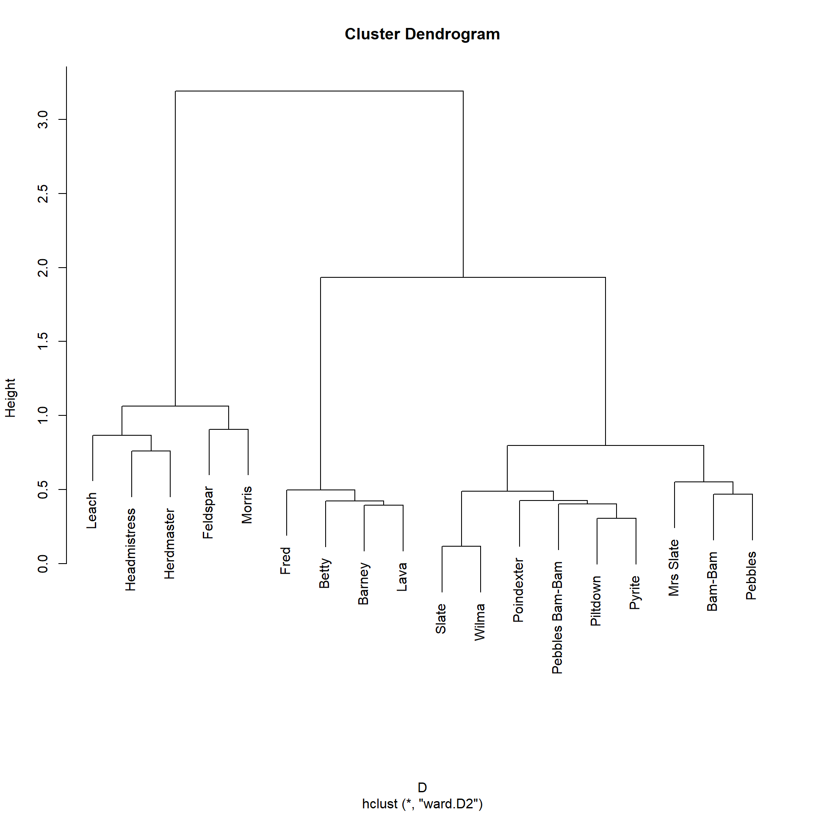
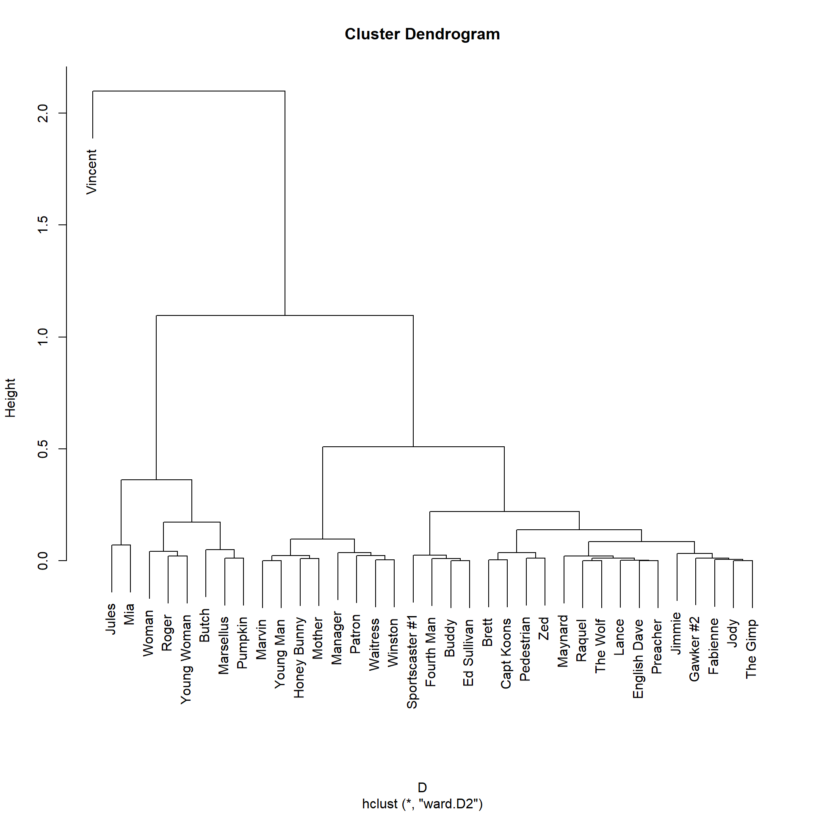

SimRank <- function(w, alpha = 0.85) {
d <- rowSums(w) #degree vector
n <- nrow(w) #number of nodes in the graph
z <- diag(1, n, n) #diagonal matrix (nodes are maximally similar to themselves)
if(is.null(rownames(w)) == TRUE) {rownames(w) <- 1:nrow(w)} #checking if matrix has row names
if(is.null(colnames(w)) == TRUE) {colnames(w) <- 1:nrow(w)} #checking if matrix has column names
rownames(z) <- rownames(w) #naming similarity matrix rows
colnames(z) <- colnames(w) #naming similarity matrix columns
nei <- apply(w, 1, function(x){which(x == 1)}) #neighbors list
delta <- 1
while(delta > 1e-10) { #run while delta is bigger than a tiny number
z.o <- z #old similarity matrix at t-1
for(i in 1:n) {
for(j in 1:n) {
if (i != j) {
sigma <- 0 #initialize ij sum for iteration t
for (k in nei[[i]]) { #loop through i's neighbors
for (l in nei[[j]]) { #loop through j's neighbors
sigma <- sigma + z[k, l] #i's similarity to j is equal to sum of neighbors' similarity
} #end l for loop
} #end k for loop
z[i,j] <- alpha/(d[i] * d[j]) * sigma #updating ij similarity score at t
} #end if
} #end j for loop
} #end i for loop
delta <- abs(sum(abs(z)) - sum(abs(z.o))) #difference between similarity matrices at t and t-1
} #end while loop
return(z) #return similarity matrix after convergence
} #end functionGeneralized Vertex Similarities
Generalized Similarities
So far, we have defined distances and similarities mainly as a function of the number of shared neighbors between two nodes. Structural equivalence is an idealized version of this, obtaining whenever people share exactly the same set of neighbors.
Yet, similarities based on local neighborhood information only have been criticized (e.g., by Borgatti and Everett (1992)) for not quite capturing the sociological intuition behind the idea of a role which is usually what they are deployed for. That is, two doctors don’t occupy the same role because they treat the same set of patients (in fact, this would be weird); instead, the set of doctors occupy the same role to the extent they treat a set of actors in the same (or similar) role: Namely, patients, regardless of whether those actors are literally the same or not.
This worry led social network analysts to try to generalize the concept of structural equivalence using less stringent algebraic definition, resulting in something of a proliferation of different equivalences such as automorphic or regular equivalence (Borgatti and Everett 1992).
Unfortunately, none of this work led (unlike the work on structural equivalence) to useful or actionable tools for data analysis, with some even concluding that some definitions of equivalence (like regular equivalence) are unlikely to be found in any interesting substantive setting.
A better approach here is to use the more relaxed notion of similarity like we did above to come up with a more general definition that can capture our role-based intuitions. Note that all the similarity notions studied earlier have structural equivalence as the limiting case of maximum similarity. So they are still based on the idea that nodes are similar to the extent they connect to the same others.
We can generalize this idea (to deal with the doctor/patient role problem) in the following way: nodes are similar to the extent they connect to similar others, with the restriction that we can only use endogenous (structural connectivity) information—like with structural equivalence or common-neighbor approaches—to define everyone’s similarity (no exogenous attribute stuff).
Jeh and Widom’s SimRank
As Jeh and Widom (2002) note, this approach does lead to a coherent generalization of the idea of similarity for nodes in graphs because we can just define similarity recursively and iterate through the graph until the similarity scores stop changing.1
More specifically, they propose to measure the similarity between two nodes \(i\) and \(j\) at each iteration-step \(t\) (\(s_{ij}(t)\)) using the formula:
\[ s_{ij}(t) = \frac{\alpha}{d_i d_j} \sum_{k \in N(i)} \sum_{l \in N(j)} s_{kl}(t-1) \tag{1}\]
So the similarity between two nodes at step \(t\) is just the sum of the pairwise similarities between each of their neighbors (computed in the previous step, \(t-1\)), weighted by the ratio of a free parameter \(\alpha\) (a number between zero and one) to the product of their degrees (to take a weighted average).
This measure nicely captures the idea that nodes are similar to the extent they both connect to people who are themselves similar. Note that it doesn’t matter whether these neighbors are shared between the two nodes (the summation occurs over each pair of nodes formed by crossing the set \(p\) + \(q\) against \(p\) + \(r\) as defined in the local similarity lecture), whether they are themselves neighbors, which deals with the doctor/patient problem we referred to earlier.
A function that implements this idea looks like:
The SimRank function takes an adjacency matrix as input (w) and returns a generalized similarity matrix between nodes (z) as output.
Let’s try it out in the Pulp Fiction graph:
library(networkdata)
library(igraph)
library(stringr) #using stringr to change names from all caps to title case
g <- movie_559
V(g)$name <- str_to_title(V(g)$name)
V(g)$name[which(V(g)$name == "Esmarelda")] <- "Esmeralda" #fixing misspelled name
g <- delete_vertices(g, degree(g) < 2) #deleting low degree vertices
A <- as.matrix(as_adjacency_matrix(g))
S <- SimRank(A)
round(S[1:5, 1:5], 2) Brett Buddy Butch Capt Koons Ed Sullivan
Brett 1.00 0.22 0.22 0.22 0.22
Buddy 0.22 1.00 0.22 0.32 0.52
Butch 0.22 0.22 1.00 0.22 0.22
Capt Koons 0.22 0.32 0.22 1.00 0.32
Ed Sullivan 0.22 0.52 0.22 0.32 1.00We can transform the generalized similarities to distances and plot:
Note that the lowest levels of the dendrogram hierarchy some of the pairings make a lot of sense: The Gimp is most similar to Zed, Pumpkin is most similar to Honey Bunny (and other characters in the diner scene), Jimmie is most similar ot the Wolf, and Jules, Marsellus, Butch, Mia, and Vincent (the main characters) are most similar to one another.
The plot suggests a division into five major node clusters. We can obtain that as follows using the cutree function:
Brett Buddy Butch Capt Koons Ed Sullivan
1 2 1 2 2
English Dave Fabienne Fourth Man Gawker #2 Honey Bunny
2 1 3 1 4
Jimmie Jody Jules Lance Manager
3 2 1 2 4
Marsellus Marvin Maynard Mia Mother
1 1 5 1 2
Patron Pedestrian Preacher Pumpkin Raquel
4 1 2 4 3
Roger Sportscaster #1 The Gimp The Wolf Vincent
1 1 5 3 1
Waitress Winston Woman Young Man Young Woman
4 3 2 4 4
Zed
5 The LHN Approach
Leicht, Holme, and Newman (2006) provide a twist on the SimRank approach. Their idea is that a node \(i\) is similar to another node \(j\) just in case \(i\)’s neighbors are similar to \(j\):
\[ s_{ij}(t) = \delta_{ij} + \alpha \sum_{k \in N(i)} s_{kj}(t-1) \tag{2}\]
Where \(\delta_{ij}\) is the Kronecker function that equals one when \(i = j\) and zero otherwise, and \(\alpha\) is a number between zero and one with the restriction: \(\alpha < \frac{1}{\lambda_1}\), where \(\lambda_1\) is the largest eigenvalue of the adjacency matrix (also called the spectral radius of the adjacency matrix). This is required for the series to converge, just like the global Katz similarity we considered before.
Meanwhile, the \(\delta_{ij}\) can be interpreted as “free similarity points” that each node gets for being similar to itself. In this setup, the pairwise similarity between \(i\) and \(j\) is just the sum of the previously calculated similarities between the set of neighbors of \(i\) and the focal node \(j\) weighted by the parameter \(\alpha\).
Here’s a function that does that:
LHN.sim <- function(w, alpha = 0.25) {
n <- nrow(w) #number of nodes in the graph
z <- diag(1, n, n) #diagonal matrix (nodes are maximally similar to themselves)
if(is.null(rownames(w)) == TRUE) {rownames(w) <- 1:nrow(w)} #checking if matrix has row names
if(is.null(colnames(w)) == TRUE) {colnames(w) <- 1:nrow(w)} #checking if matrix has column names
rownames(z) <- rownames(w) #naming similarity matrix rows
colnames(z) <- colnames(w) #naming similarity matrix columns
nei <- apply(w, 1, function(x){which(x == 1)}) #neighbors list
rho <- (eigen(w)$values[1]^-1) - 1e-02 #inverse of spectral radius of adjacency matrix minus a tiny number
if(alpha > rho) {alpha <- rho} #if alpha is larger than rho make it rho
delta <- 1
while(delta > 1e-10) { #run while delta is bigger than a tiny number
z.o <- z #old similarity matrix at t-1
for(i in 1:n) {
for(j in 1:n) {
sigma <- 0 #initialize ij sum for iteration t
for (k in nei[[i]]) { #loop through i's neighbors
sigma <- sigma + z[k,j] #ij similarity equal to sum of i's neighbors' k similarity to j
} #end k for loop
z[i,j] <- as.numeric(i == j) + (alpha * sigma) #updating ij similarity score at t
} #end j for loop
} #end i for loop
delta <- abs(sum(abs(z)) - sum(abs(z.o))) #difference between similarity matrices at t and t-1
} #end while loop
return(z) #return similarity matrix after convergence
} #end functionAnd here are the results for the Pulp Fiction network:
Brett Buddy Butch Capt Koons Ed Sullivan
Brett 1.51 0.16 0.82 0.31 0.16
Buddy 0.16 1.08 0.25 0.13 0.08
Butch 0.82 0.25 2.16 0.61 0.25
Capt Koons 0.31 0.13 0.61 1.27 0.13
Ed Sullivan 0.16 0.08 0.25 0.13 1.08Note that in the LHN framework, nodes are always maximally similar to themselves.
We can transform the LHN generalized similarities to distances by dividing by the maximum and then clustering:
S <- S/max(S)
D <- dist(1- S)
h.res <- hclust(D, method = "ward.D2") #hierarchical clustering
plot(h.res)
Which looks like another five-block partition. Cutting the dendrogram at the requisite height, we get:
Brett Buddy Butch Capt Koons Ed Sullivan
1 2 3 4 2
English Dave Fabienne Fourth Man Gawker #2 Honey Bunny
4 2 2 2 4
Jimmie Jody Jules Lance Manager
2 2 3 2 4
Marsellus Marvin Maynard Mia Mother
1 1 5 1 4
Patron Pedestrian Preacher Pumpkin Raquel
4 2 2 4 2
Roger Sportscaster #1 The Gimp The Wolf Vincent
1 5 5 2 3
Waitress Winston Woman Young Man Young Woman
5 2 4 5 5
Zed
5 Which is a bit different from the SimRank clustering. Here, the three main characters \(\{\) Vincent, Jules, Butch \(\}\) appear as maximally similar in their own cluster, while \(\{\) Brett, Marvin, Roger, Marsellus, Mia \(\}\) form their own similarity group.
The Melnik et al. Approach
Melnik, Garcia-Molina, and Rahm (2002) provide yet another variation on the theme of generalized similarity scoring. Their approach is a bit different that SimRank or the LHN strategy. The idea is to start from state in which all pairs of nodes have the same similarity score (e.g., \(s_{ij} = 1\)) at \(t = 0\) and then update the subsequent similarities according to the rule:
\[ s_{ij}(t) = s_{ij}(t-1) + \left[\sum_{k \in N(i)} \sum_{l \in N(j)} \frac{1}{d_k d_l} s_{kl}(t-1)\right] \tag{3}\]
So the similarity between \(i\) and \(j\) is equal to their previous similarity \(s_{ij}(t-1)\) plus the sum of their neighbors similarity (just like SimRank), weighted by their respective degrees (unlike SimRank).
In order for the iterations to converge, we need to normalize the similarity matrix \(\mathbf{S}\) at each iteration step \(t\) according to:
\[ \mathbf{S}(t) = \frac{\mathbf{S}(t)}{||\mathbf{S}(t)||_2} \]
Where \(||\mathbf{S}||_2\) is the matrix Frobenius (Euclidean) norm, or the square root of the sum of the square entries:
\[ ||\mathbf{S}(t)||_2 = \sqrt{\sum_i \sum_j s_{ij}(t)^2} \]
Here’s a function that does that:
melnik.sim <- function(w) {
d <- rowSums(w) #degree vector
n <- nrow(w) #number of nodes in the graph
z <- matrix(1, n, n) #all pairs start as equally similar (sij = 1)
if(is.null(rownames(w)) == TRUE) {rownames(w) <- 1:nrow(w)} #checking if matrix has row names
if(is.null(colnames(w)) == TRUE) {colnames(w) <- 1:nrow(w)} #checking if matrix has column names
rownames(z) <- rownames(w) #naming similarity matrix rows
colnames(z) <- colnames(w) #naming similarity matrix columns
nei <- apply(w, 1, function(x){which(x == 1)}) #neighbors list
delta <- 1
while(delta > 1e-10) { #run while delta is bigger than a tiny number
z.o <- z #old similarity matrix at t-1
for(i in 1:n) {
for(j in 1:n) {
sigma <- 0 #initialize ij sum for iteration t
for (k in nei[[i]]) { #loop through i's neighbors
for (l in nei[[j]]) { #loop through j's neighbors
sigma <- sigma + (d[k]*d[l])^-1 * z[k,l] #i's similarity to j is equal to sum of neighbors' similarity weighted by their degree
} #end l for loop
} #end k for loop
z[i,j] <- z[i,j] + sigma #updating ij similarity score at t
} #end j for loop
} #end i for loop
z <- z/norm(z, type = "F") #normalizing similarity matrix at z
delta <- abs(sum(abs(z)) - sum(abs(z.o))) #difference between similarity matrices at t and t-1
} #end while loop
return(z) #return similarity matrix after convergence
} #end functionWe can now test it on the Pulp Fiction network:
Brett Buddy Butch Capt Koons Ed Sullivan
Brett 0.01 0.00 0.03 0.01 0.00
Buddy 0.00 0.00 0.01 0.00 0.00
Butch 0.03 0.01 0.08 0.02 0.01
Capt Koons 0.01 0.00 0.03 0.01 0.00
Ed Sullivan 0.00 0.00 0.01 0.00 0.00Which yields the following distance matrix and hierarchical clustering dendrogram:
S <- S/max(S)
D <- dist(1- S)
h.res <- hclust(D, method = "ward.D2") #hierarchical clustering
plot(h.res)
Which looks like yet another five-block partition. Cutting the dendrogram at the requisite height, we get:
Brett Buddy Butch Capt Koons Ed Sullivan
1 1 2 1 1
English Dave Fabienne Fourth Man Gawker #2 Honey Bunny
1 1 1 1 3
Jimmie Jody Jules Lance Manager
1 1 4 1 3
Marsellus Marvin Maynard Mia Mother
2 3 1 4 3
Patron Pedestrian Preacher Pumpkin Raquel
3 1 1 2 1
Roger Sportscaster #1 The Gimp The Wolf Vincent
2 1 1 1 5
Waitress Winston Woman Young Man Young Woman
3 3 2 3 2
Zed
1 Note that the Milnek et al. approach produces a clustering that is distinct from that obtained using either SimRank or LHN. Here, \(\{\) Vincent \(\}\) is its own singleton cluster, and \(\{\) Jules, Mia \(\}\) comprise another small similarity class.
The Blondel et al. Self Similarity
We can adapt the approach we used to compute the similarity between nodes in different graphs here to compute the similarity between nodes in the same graph, or what Blondel et al. (2004) call the self-similarity.
Recall that the similarity between nodes in different graphs \(\mathbf{A}\) and \(\mathbf{B}\) can be computed using the following formula:
\[ \mathbf{Z}(t) = \mathbf{B}\mathbf{Z(t-1)}\mathbf{A}^T + \mathbf{B}^T\mathbf{Z(t-1)}\mathbf{A} \tag{4}\]
Where the similarity matrix at \(t=0\) is \(\mathbf{Z}(0) = 1\), the all ones matrix.
So to compute the self-similarity for a single graph \(\mathbf{A}\), we just plug in \(\mathbf{A}\) instead of \(\mathbf{B}\) in Equation 4 to get:
\[ \mathbf{Z}(t) = \mathbf{A}\mathbf{Z(t-1)}\mathbf{A}^T + \mathbf{A}^T\mathbf{Z(t-1)}\mathbf{A} \tag{5}\]
Here’s a function that does that:
self.sim <- function(a) {
z <- matrix(1, nrow(a), nrow(a))
if(is.null(rownames(a)) == TRUE) {rownames(a) <- 1:nrow(a)} #checking if matrix has row names
if(is.null(colnames(a)) == TRUE) {colnames(a) <- 1:ncol(a)} #checking if matrix has column names
rownames(z) <- rownames(a)
colnames(z) <- colnames(a)
d <- 1 #initializing delta
d.o <- 2 #initializing comparison delta
m <- 1 #initializing iteration counter
while (d != d.o | m %% 2 != 0) { #do while the previous delta is different from the current delta and the iteration is odd
z.o <- z #initializing old similarity matrix
d.o <- d #old delta equals previous delta
z <- (a %*% z.o %*% t(a)) + (t(a) %*% z.o %*% a) #blondel et al. similarity equation
z <- z/norm(z, type = "F") #normalizing similarity matrix
d <- abs(sum(abs(z)) - sum(abs(z.o))) #updating delta
m <- m + 1 #updating iteration counter
}
return(z) #return converged similarity matrix
}We can now test it on the Pulp Fiction network:
Brett Buddy Butch Capt Koons Ed Sullivan
Brett 0.23 0.08 0.35 0.16 0.08
Buddy 0.08 0.03 0.13 0.06 0.03
Butch 0.35 0.13 0.53 0.24 0.13
Capt Koons 0.16 0.06 0.24 0.11 0.06
Ed Sullivan 0.08 0.03 0.13 0.06 0.03Which yields the following distance matrix and hierarchical clustering dendrogram:
This approach yields five major similarity clusters. At the center we see the cluster composed of the main characters \(\{\) Vincent, Butch, Jules \(\}\), on the right we see two clusters composed \(\{\) Pumpkin, Honey Bunny \(\}\) and the other diner folk, and another composed of \(\{\) Mia, Marsellus, Rogert, Brett, Marvin \(\}\). The cluster on the left is bigger, but we can see that maximally similar characters like \(\{\) Zed, The Gimp \(\}\) make sense.
Appendix
A more general (and shorter) version of the function to compute SimRank looks like this (partly based on Fouss, Saerens, and Shimbo 2016, 84, algorithm 2.4):
SimRank2 <- function(w, alpha = 0.85) {
n <- nrow(w) #number of nodes
d <- as.numeric(colSums(w) > 0) #degree vector
e <- matrix(1, n, 1) #all ones column vector
q <- diag(as.vector(t(e) %*% w), n, n) #q matrix
diag(q) <- 1/diag(q) #setting q diagonals to inverse
q <- w %*% q
q[is.nan(q)] <- 0
delta <- 1
k <- diag(1, n, n)
while(delta > 1e-10) {
k.o <- k
k.p <- alpha * t(q) %*% k %*% q
k <- k.p - diag(diag(k.p), n, n) + diag(d, n, n)
delta <- abs(sum(abs(k)) - sum(abs(k.o)))
}
rownames(k) <- rownames(w)
colnames(k) <- colnames(w)
return(k)
}References
Blondel, Vincent D, Anahı́ Gajardo, Maureen Heymans, Pierre Senellart, and Paul Van Dooren. 2004. “A Measure of Similarity Between Graph Vertices: Applications to Synonym Extraction and Web Searching.” SIAM Review 46 (4): 647–66.
Borgatti, Stephen P, and Martin G Everett. 1992. “Notions of Position in Social Network Analysis.” Sociological Methodology 22: 1–35.
Fouss, François, Marco Saerens, and Masashi Shimbo. 2016. Algorithms and Models for Network Data and Link Analysis. Cambridge University Press.
Jeh, Glen, and Jennifer Widom. 2002. “Simrank: A Measure of Structural-Context Similarity.” In Proceedings of the Eighth ACM SIGKDD International Conference on Knowledge Discovery and Data Mining, 538–43.
Leicht, Elizabeth A, Petter Holme, and Mark EJ Newman. 2006. “Vertex Similarity in Networks.” Physical Review E—Statistical, Nonlinear, and Soft Matter Physics 73 (2): 026120.
Melnik, Sergey, Hector Garcia-Molina, and Erhard Rahm. 2002. “Similarity Flooding: A Versatile Graph Matching Algorithm and Its Application to Schema Matching.” In Proceedings 18th International Conference on Data Engineering, 117–28. IEEE.
Footnotes
Note the similarity (heh, heh) between this idea and the various status ranking algorithms for computing prestige scores.↩︎